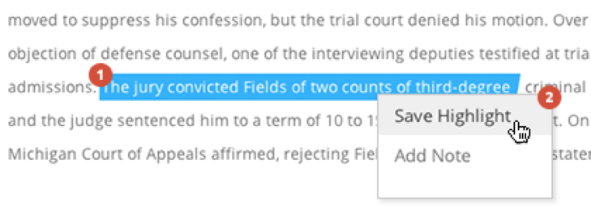
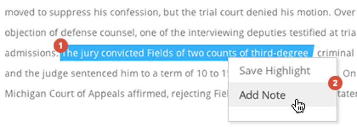
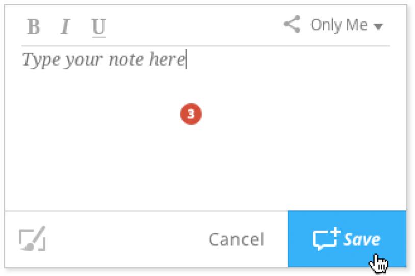
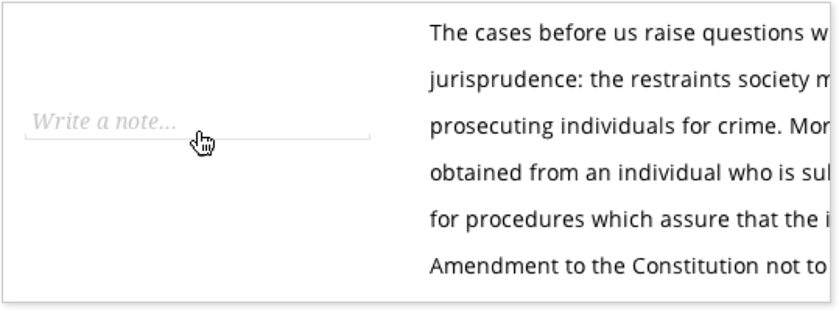
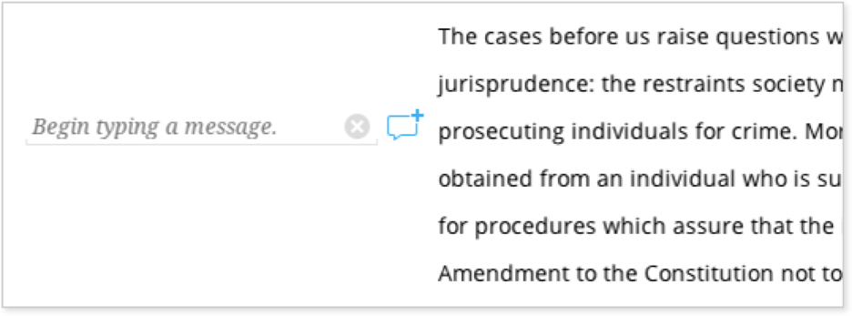
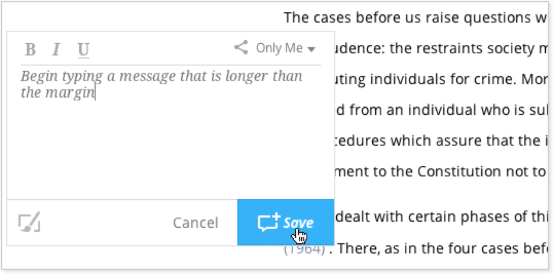
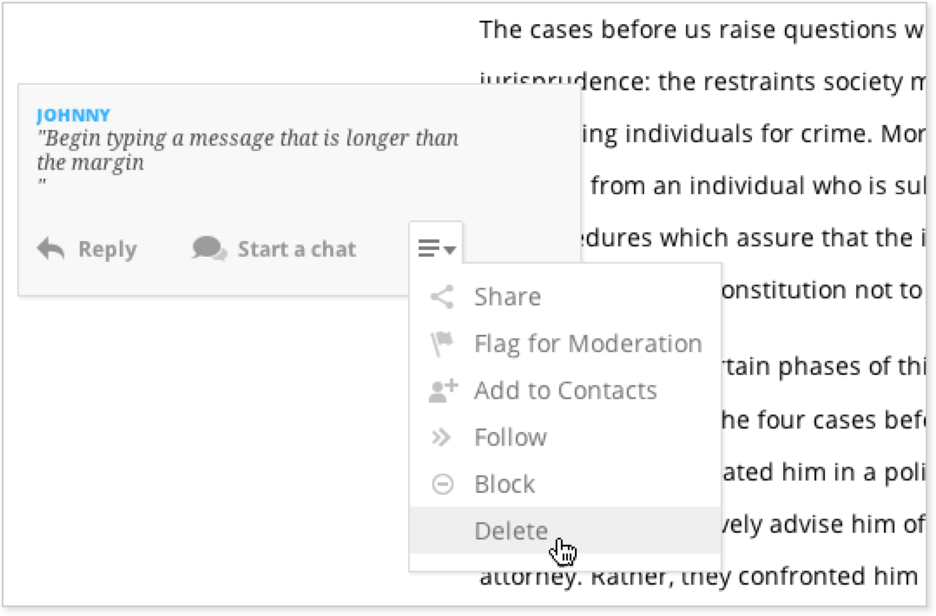
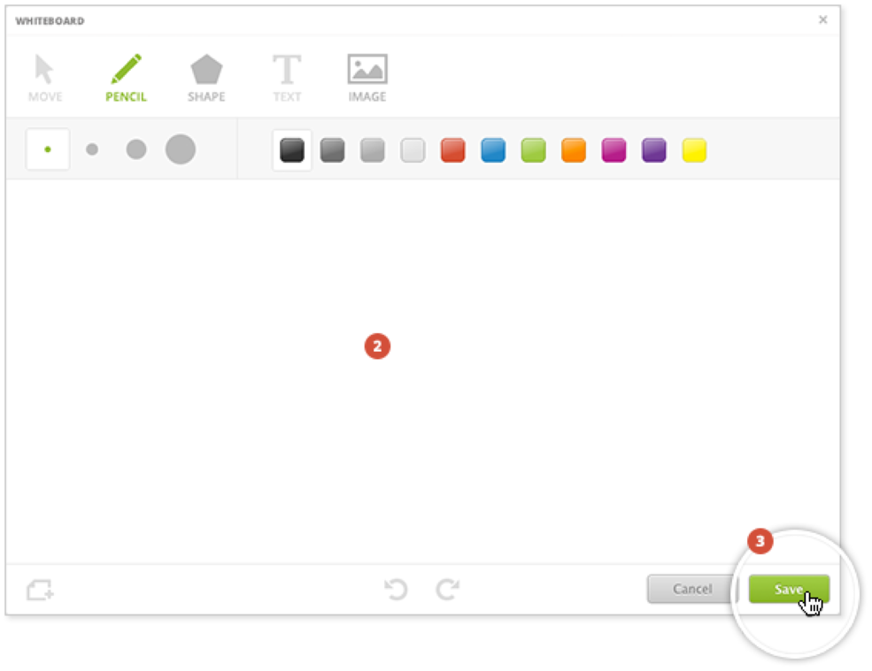

A “Highlight” is a way to emphasize valuable information within your content.
-
Click and drag the cursor over the desired text.
-
Click “Save Highlight” in the menu that appears.
 -
To delete a Highlight, select the Highlight you want to remove. Then click “Delete Highlight” from the menu.
A “Note” is a personal annotation you can make to your class content. There are two ways to add a Note to the text.
-
Click and drag the cursor over the desired text.
-
Click “Add Note” in the menu that appears.
 -
Type your comment into the box and click “Save.” The Note will appear in the margin to the left of the selected text, and the text will be highlighted.
 -
To delete the Note, hover your cursor over the Note. Click the drop-down icon and click “Delete.”
-
Hover your cursor over the left margin. An option to “Write a Note” will appear.
 -
Click “Write a Note” and begin typing. If your text exceeds the margin, a new window will appear with your text.
 -
Click “Save.” The Note will appear in the left margin.
 -
To delete the Note, hover your cursor over the Note. Click the drop-down icon and click “Delete.”

The “Whiteboard” feature allows you to visually depict concepts and then add those depictions to your class content. Whiteboards can only be created within Notes.
-
While adding a Note, click the Whiteboard icon to add a Whiteboard.
![\includegraphics[width=349px,keepaspectratio=true]{Graphics/Adding_WB_01.png}](resources/NextThoughtGenericTutorial/794ef26ebca3755d5f4d6cde157f4dfd7148ec90/fd35e23767020999111e1f49239199b4c5eff23e.png)
-
Create the Whiteboard using preferred drawing tools.
-
Click “Save.” Whiteboards are stored within Notes in the left margin.

NextThought allows you to filter all Interactions, so you can view only the material that is valuable to you.
-
Click the “Show Me” drop-down menu at the top of the page.
-
Select any combination of filters or select “Everything” and “Everyone” to view all Interactions.
The first section in the drop-down menu allows you to choose what types of Interactions appear within your class content. The second section allows you to choose whose shared Interactions are viewable.